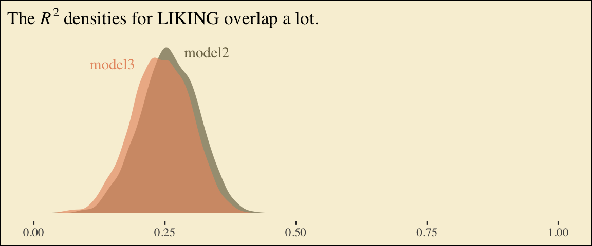

6 Mediation Analysis with a Multicategorical Antecedent
6.1 Relative total, direct, and indirect effects
6.2 An example: Sex discrimination in the workplace
Here we load a couple necessary packages, load the data, and take a glimpse().
library(tidyverse)
protest <- read_csv("data/protest/protest.csv")
glimpse(protest)
#> Observations: 129
#> Variables: 6
#> $ subnum <int> 209, 44, 124, 232, 30, 140, 27, 64, 67, 182, 85, 109, 122, 69, 45, 28, 170, 66, 168, 97,...
#> $ protest <int> 2, 0, 2, 2, 2, 1, 2, 0, 0, 0, 2, 2, 0, 1, 1, 0, 1, 2, 2, 1, 2, 1, 1, 2, 2, 0, 1, 1, 0, 1...
#> $ sexism <dbl> 4.87, 4.25, 5.00, 5.50, 5.62, 5.75, 5.12, 6.62, 5.75, 4.62, 4.75, 6.12, 4.87, 5.87, 4.87...
#> $ angry <int> 2, 1, 3, 1, 1, 1, 2, 1, 6, 1, 2, 5, 2, 1, 1, 1, 2, 1, 3, 4, 1, 1, 1, 5, 1, 5, 1, 1, 2, 1...
#> $ liking <dbl> 4.83, 4.50, 5.50, 5.66, 6.16, 6.00, 4.66, 6.50, 1.00, 6.83, 5.00, 5.66, 5.83, 6.50, 4.50...
#> $ respappr <dbl> 4.25, 5.75, 4.75, 7.00, 6.75, 5.50, 5.00, 6.25, 3.00, 5.75, 5.25, 7.00, 4.50, 6.25, 5.00...Here are the ungrouped means and \(SD\)s for respappr and liking shown at the bottom of Table 6.1.
protest %>%
select(liking:respappr) %>%
gather(key, value) %>%
group_by(key) %>%
summarize(mean = mean(value),
sd = sd(value)) %>%
mutate_if(is.double, round, digits = 3)
#> # A tibble: 2 x 3
#> key mean sd
#> <chr> <dbl> <dbl>
#> 1 liking 5.64 1.05
#> 2 respappr 4.87 1.35We compute the summaries for respappr and liking, grouped by protest, like so.
protest %>%
select(protest, liking:respappr) %>%
gather(key, value, -protest) %>%
group_by(protest, key) %>%
summarize(mean = mean(value),
sd = sd(value)) %>%
mutate_if(is.double, round, digits = 3)
#> # A tibble: 6 x 4
#> # Groups: protest [3]
#> protest key mean sd
#> <int> <chr> <dbl> <dbl>
#> 1 0 liking 5.31 1.30
#> 2 0 respappr 3.88 1.46
#> 3 1 liking 5.83 0.819
#> 4 1 respappr 5.14 1.08
#> 5 2 liking 5.75 0.936
#> 6 2 respappr 5.49 0.936It looks like Hayes has a typo in the \(SD\) for liking when protest == 0. It seemed he accidentally entered the value for when protest == 1 in that slot.
You’ll have to wait a minute to see where the adjusted \(Y\) values came.
With a little ifelse(), computing the dummies D1 and D2 is easy enough.
protest <-
protest %>%
mutate(D1 = ifelse(protest == 1, 1, 0),
D2 = ifelse(protest == 2, 1, 0))We’re almost ready to fit the model. Let’s load brms.
library(brms)This is the first time we’ve had a simple univariate regression model in a while. No special cbind() syntax or multiple bf() formulas. Just straight up brm().
model1 <-
brm(data = protest, family = gaussian,
liking ~ 1 + D1 + D2,
chains = 4, cores = 4)fixef(model1)
#> Estimate Est.Error Q2.5 Q97.5
#> Intercept 5.310 0.167 4.9815 5.644
#> D1 0.517 0.232 0.0664 0.980
#> D2 0.442 0.231 -0.0138 0.891Our \(R^2\) differes a bit from the OLS version in the text. This shouldn’t be surprising when it’s near the boundary.
bayes_R2(model1)
#> Estimate Est.Error Q2.5 Q97.5
#> R2 0.0588 0.036 0.00534 0.14Here’s its shape. For the plots in this chapter, we’ll take a few formatting cues from Edward Tufte, curtesy of the ggthemes package. The theme_tufte() function will change the default font and remove some chart junk. We will take our color palette from Pokemon via the palettetown package.
library(ggthemes)
library(palettetown)
bayes_R2(model1, summary = F) %>%
as_tibble() %>%
ggplot(aes(x = R2)) +
geom_density(size = 0, fill = pokepal(pokemon = "plusle")[2]) +
scale_y_continuous(NULL, breaks = NULL) +
coord_cartesian(xlim = 0:1) +
xlab(expression(italic(R)^{2})) +
theme_tufte() +
theme(legend.title = element_blank(),
plot.background = element_rect(fill = pokepal(pokemon = "plusle")[8]))
To use the model-implied equations to compute the means for each group on the criterion, we’ll extract the posterior samples.
post <- posterior_samples(model1)
post %>%
transmute(Y_np = b_Intercept + b_D1*0 + b_D2*0,
Y_ip = b_Intercept + b_D1*1 + b_D2*0,
Y_cp = b_Intercept + b_D1*0 + b_D2*1) %>%
gather() %>%
# this line will order our output the same way Hayes did in the text (p. 197)
mutate(key = factor(key, levels = c("Y_np", "Y_ip", "Y_cp"))) %>%
group_by(key) %>%
summarize(mean = mean(value),
sd = sd(value))
#> # A tibble: 3 x 3
#> key mean sd
#> <fct> <dbl> <dbl>
#> 1 Y_np 5.31 0.167
#> 2 Y_ip 5.83 0.163
#> 3 Y_cp 5.75 0.160What Hayes called the “relative total effects” \(c_{1}\) and \(c_{2}\) are the D1 and D2 lines in our fixef() output, above.
Here are the sub-models for the mediation model.
m_model <- bf(respappr ~ 1 + D1 + D2)
y_model <- bf(liking ~ 1 + D1 + D2 + respappr)We fit.
model2 <-
brm(data = protest, family = gaussian,
m_model + y_model + set_rescor(FALSE),
chains = 4, cores = 4)print(model2)
#> Family: MV(gaussian, gaussian)
#> Links: mu = identity; sigma = identity
#> mu = identity; sigma = identity
#> Formula: respappr ~ 1 + D1 + D2
#> liking ~ 1 + D1 + D2 + respappr
#> Data: protest (Number of observations: 129)
#> Samples: 4 chains, each with iter = 2000; warmup = 1000; thin = 1;
#> total post-warmup samples = 4000
#>
#> Population-Level Effects:
#> Estimate Est.Error l-95% CI u-95% CI Eff.Sample Rhat
#> respappr_Intercept 3.88 0.19 3.51 4.25 4000 1.00
#> liking_Intercept 3.71 0.32 3.08 4.32 4000 1.00
#> respappr_D1 1.26 0.26 0.76 1.77 4000 1.00
#> respappr_D2 1.61 0.26 1.08 2.11 4000 1.00
#> liking_D1 -0.01 0.23 -0.46 0.43 3427 1.00
#> liking_D2 -0.22 0.23 -0.67 0.23 3397 1.00
#> liking_respappr 0.41 0.07 0.27 0.56 4000 1.00
#>
#> Family Specific Parameters:
#> Estimate Est.Error l-95% CI u-95% CI Eff.Sample Rhat
#> sigma_respappr 1.18 0.08 1.04 1.35 4000 1.00
#> sigma_liking 0.93 0.06 0.82 1.05 4000 1.00
#>
#> Samples were drawn using sampling(NUTS). For each parameter, Eff.Sample
#> is a crude measure of effective sample size, and Rhat is the potential
#> scale reduction factor on split chains (at convergence, Rhat = 1).The Bayesian \(R^2\) posteriors:
bayes_R2(model2, summary = F) %>%
as_tibble() %>%
gather() %>%
ggplot(aes(x = value, fill = key)) +
geom_density(size = 0, alpha = 2/3) +
annotate("text", x = .18, y = 6.75, label = "liking", color = pokepal(pokemon = "plusle")[2], family = "Times") +
annotate("text", x = .355, y = 6.75, label = "respappr", color = pokepal(pokemon = "plusle")[6], family = "Times") +
scale_y_continuous(NULL, breaks = NULL) +
scale_fill_manual(values = pokepal(pokemon = "plusle")[c(2, 6)]) +
coord_cartesian(xlim = 0:1) +
labs(title = expression(paste("The ", italic(R)^{2}, " densities overlap near perfectly, both hovering around .25.")),
x = NULL) +
theme_tufte() +
theme(legend.position = "none",
plot.background = element_rect(fill = pokepal(pokemon = "plusle")[8]))
To get the model summaries as presented in the second two columns in Table 6.2, we use posterior_samples(), rename a bit, and summarize() as usual.
post <-
posterior_samples(model2) %>%
mutate(a1 = b_respappr_D1,
a2 = b_respappr_D2,
b = b_liking_respappr,
c1_prime = b_liking_D1,
c2_prime = b_liking_D2,
i_m = b_respappr_Intercept,
i_y = b_liking_Intercept)
post %>%
select(a1:i_y) %>%
gather() %>%
group_by(key) %>%
summarize(mean = mean(value),
sd = sd(value),
ll = quantile(value, probs = .025),
ul = quantile(value, probs = .975)) %>%
mutate_if(is.double, round, digits = 3)
#> # A tibble: 7 x 5
#> key mean sd ll ul
#> <chr> <dbl> <dbl> <dbl> <dbl>
#> 1 a1 1.26 0.26 0.756 1.77
#> 2 a2 1.61 0.258 1.08 2.11
#> 3 b 0.413 0.073 0.268 0.559
#> 4 c1_prime -0.008 0.227 -0.46 0.429
#> 5 c2_prime -0.224 0.231 -0.668 0.226
#> 6 i_m 3.88 0.186 3.51 4.25
#> # ... with 1 more rowWorking with the \(\overline{M}_{ij}\) formulas in page 199 is quite similar to what we did above.
post %>%
transmute(M_np = b_respappr_Intercept + b_respappr_D1*0 + b_respappr_D2*0,
M_ip = b_respappr_Intercept + b_respappr_D1*1 + b_respappr_D2*0,
M_cp = b_respappr_Intercept + b_respappr_D1*0 + b_respappr_D2*1) %>%
gather() %>%
# this line will order our output the same way Hayes did in the text (p. 199)
mutate(key = factor(key, levels = c("M_np", "M_ip", "M_cp"))) %>%
group_by(key) %>%
summarize(mean = mean(value),
sd = sd(value))
#> # A tibble: 3 x 3
#> key mean sd
#> <fct> <dbl> <dbl>
#> 1 M_np 3.88 0.186
#> 2 M_ip 5.14 0.182
#> 3 M_cp 5.49 0.177The \(\overline{Y}^*_{ij}\) formulas are more of the same.
post <-
post %>%
mutate(Y_np = b_liking_Intercept + b_liking_D1*0 + b_liking_D2*0 + b_liking_respappr*mean(protest$respappr),
Y_ip = b_liking_Intercept + b_liking_D1*1 + b_liking_D2*0 + b_liking_respappr*mean(protest$respappr),
Y_cp = b_liking_Intercept + b_liking_D1*0 + b_liking_D2*1 + b_liking_respappr*mean(protest$respappr))
post %>%
select(starts_with("Y_")) %>%
gather() %>%
mutate(key = factor(key, levels = c("Y_np", "Y_ip", "Y_cp"))) %>%
group_by(key) %>%
summarize(mean = mean(value),
sd = sd(value))
#> # A tibble: 3 x 3
#> key mean sd
#> <fct> <dbl> <dbl>
#> 1 Y_np 5.72 0.164
#> 2 Y_ip 5.71 0.146
#> 3 Y_cp 5.49 0.144Note, these are where the adjusted \(Y\) values came from in Table 6.1.
This is as fine a spot as any to introduce coefficient plots. Both brms and the bayesplot package offer convenience functions for coefficient plots. It’s good to know how to make them by hand. Here’s ours for those last three \(\overline{Y}^*_{ij}\)-values.
post %>%
select(starts_with("Y_")) %>%
gather() %>%
ggplot(aes(x = key, y = value, color = key)) +
stat_summary(geom = "pointrange",
fun.y = median,
fun.ymin = function(x){quantile(x, probs = .025)},
fun.ymax = function(x){quantile(x, probs = .975)},
size = .75) +
stat_summary(geom = "linerange",
fun.ymin = function(x){quantile(x, probs = .25)},
fun.ymax = function(x){quantile(x, probs = .75)},
size = 1.5) +
scale_color_manual(values = pokepal(pokemon = "plusle")[c(3, 7, 9)]) +
coord_flip() +
theme_tufte() +
labs(x = NULL, y = NULL) +
theme(axis.ticks.y = element_blank(),
legend.position = "none",
plot.background = element_rect(fill = pokepal(pokemon = "plusle")[8]))
The points are the posterior medians, the thick inner lines the 50% intervals, and the thinner outer lines the 95% intervals. For kicks, we distinguished the three values by color.
If we want to examine \(R^2\) change for dropping the dummy variables, we’ll first fit a model that omits them.
model3 <-
brm(data = protest, family = gaussian,
liking ~ 1 + respappr,
chains = 4, cores = 4)Here are the competing \(R^2\) distributions.
R2s <-
bayes_R2(model2, resp = "liking", summary = F) %>%
as_tibble() %>%
rename(R2 = R2_liking) %>%
bind_rows(
bayes_R2(model3, summary = F) %>%
as_tibble()
) %>%
mutate(fit = rep(c("model2", "model3"), each = 4000))
R2s %>%
ggplot(aes(x = R2, fill = fit)) +
geom_density(size = 0, alpha = 2/3) +
scale_fill_manual(values = pokepal(pokemon = "plusle")[c(6, 7)]) +
annotate("text", x = .15, y = 6.75, label = "model3", color = pokepal(pokemon = "plusle")[7], family = "Times") +
annotate("text", x = .35, y = 6.75, label = "model2", color = pokepal(pokemon = "plusle")[6], family = "Times") +
scale_y_continuous(NULL, breaks = NULL) +
coord_cartesian(xlim = 0:1) +
labs(title = expression(paste("The ", italic(R)^{2}, " densities for LIKING overlap a lot.")),
x = NULL) +
theme_tufte() +
theme(legend.position = "none",
plot.background = element_rect(fill = pokepal(pokemon = "plusle")[8]))
If you want to compare then with a change score, do something like this.
R2s %>%
mutate(iter = rep(1:4000, times = 2)) %>%
spread(key = fit, value = R2) %>%
mutate(difference = model2 - model3) %>%
ggplot(aes(x = difference)) +
geom_density(size = 0, fill = pokepal(pokemon = "plusle")[4]) +
geom_vline(xintercept = 0, color = pokepal(pokemon = "plusle")[8]) +
scale_y_continuous(NULL, breaks = NULL) +
labs(title = expression(paste("The ", Delta, italic(R)^{2}, " distribution")),
subtitle = "Doesn't appear we have a lot of change.",
x = NULL) +
theme_tufte() +
theme(legend.title = element_blank(),
plot.background = element_rect(fill = pokepal(pokemon = "plusle")[8]))
Here’s how to compute the summaries for \(a_{1}b\) and \(a_{2}b\), including the Bayesian HMC intervals.
post %>%
mutate(a1b = a1*b,
a2b = a2*b) %>%
select(a1b:a2b) %>%
gather() %>%
group_by(key) %>%
summarize(mean = mean(value),
sd = sd(value),
ll = quantile(value, probs = .025),
ul = quantile(value, probs = .975)) %>%
mutate_if(is.double, round, digits = 3)
#> # A tibble: 2 x 5
#> key mean sd ll ul
#> <chr> <dbl> <dbl> <dbl> <dbl>
#> 1 a1b 0.523 0.146 0.264 0.831
#> 2 a2b 0.667 0.163 0.37 1.026.3 Using a different group coding system
Here we’ll make our alternative dummies, what we’ll call D_1 and D_2, with orthogonal contrast coding.
protest <-
protest %>%
mutate(D_1 = ifelse(protest == 0, -2/3, 1/3),
D_2 = ifelse(protest == 0, 0,
ifelse(protest == 1, -1/2, 1/2)))Here are the sub-models.
m_model <- bf(respappr ~ 1 + D_1 + D_2)
y_model <- bf(liking ~ 1 + D_1 + D_2 + respappr)Now we fit.
model4 <-
brm(data = protest, family = gaussian,
m_model + y_model + set_rescor(FALSE),
chains = 4, cores = 4)Here are our intercepts and regression coefficient summaries.
fixef(model4)
#> Estimate Est.Error Q2.5 Q97.5
#> respappr_Intercept 4.842 0.1046 4.633 5.045
#> liking_Intercept 3.641 0.3515 2.954 4.345
#> respappr_D_1 1.436 0.2230 0.996 1.867
#> respappr_D_2 0.349 0.2532 -0.149 0.843
#> liking_D_1 -0.114 0.2022 -0.506 0.283
#> liking_D_2 -0.214 0.2002 -0.604 0.185
#> liking_respappr 0.411 0.0708 0.271 0.550It’s important to note that these will not correspond to the “TOTAL EFFECT MODEL” section of the PROCESS output of Figure 6.3. Hayes’s PROCESS has the mcx=3 command which tells the program to reparametrize the orthogonal contrasts. brms doesn’t have such a command.
For now, we’ll have to jump to equation 6.8 towards the bottom of page 207. Those parameters are evident in our output.
fixef(model4)[c(1, 3:4) , ] %>% round(digits = 3)
#> Estimate Est.Error Q2.5 Q97.5
#> respappr_Intercept 4.842 0.105 4.633 5.045
#> respappr_D_1 1.436 0.223 0.996 1.867
#> respappr_D_2 0.349 0.253 -0.149 0.843Thus it’s easy to get the \(\overline{M}_{ij}\) means with a little posterior manipulation.
post <- posterior_samples(model4)
post <-
post %>%
mutate(M_np = b_respappr_Intercept + b_respappr_D_1*-2/3 + b_respappr_D_2*0,
M_ip = b_respappr_Intercept + b_respappr_D_1*1/3 + b_respappr_D_2*-1/2,
M_cp = b_respappr_Intercept + b_respappr_D_1*1/3 + b_respappr_D_2*1/2)
post %>%
select(starts_with("M_")) %>%
gather() %>%
mutate(key = factor(key, levels = c("M_np", "M_ip", "M_cp"))) %>%
group_by(key) %>%
summarize(mean = mean(value),
sd = sd(value))
#> # A tibble: 3 x 3
#> key mean sd
#> <fct> <dbl> <dbl>
#> 1 M_np 3.89 0.184
#> 2 M_ip 5.15 0.179
#> 3 M_cp 5.50 0.179With these in hand, we can compute \(a_{1}\) and \(a_{2}\).
post <-
post %>%
mutate(a1 = (M_ip + M_cp)/2 - M_np,
a2 = M_cp - M_ip)
post %>%
select(a1:a2) %>%
gather() %>%
group_by(key) %>%
summarize(mean = mean(value),
sd = sd(value))
#> # A tibble: 2 x 3
#> key mean sd
#> <chr> <dbl> <dbl>
#> 1 a1 1.44 0.223
#> 2 a2 0.349 0.253Happily, our model output will allow us to work with Hayes’s \(\overline{Y}^*_{ij}\) equations in the middle of page 210.
post <-
post %>%
mutate(Y_np = b_liking_Intercept + b_liking_D_1*-2/3 + b_liking_D_2*0 + b_liking_respappr*mean(protest$respappr),
Y_ip = b_liking_Intercept + b_liking_D_1*1/3 + b_liking_D_2*-1/2 + b_liking_respappr*mean(protest$respappr),
Y_cp = b_liking_Intercept + b_liking_D_1*1/3 + b_liking_D_2*1/2 + b_liking_respappr*mean(protest$respappr))
post %>%
select(starts_with("Y_")) %>%
gather() %>%
mutate(key = factor(key, levels = c("Y_np", "Y_ip", "Y_cp"))) %>%
group_by(key) %>%
summarize(mean = mean(value),
sd = sd(value))
#> # A tibble: 3 x 3
#> key mean sd
#> <fct> <dbl> <dbl>
#> 1 Y_np 5.72 0.163
#> 2 Y_ip 5.71 0.145
#> 3 Y_cp 5.50 0.147And with these in hand, we can compute \(c'_{1}\) and \(c'_{2}\).
post <-
post %>%
mutate(c1_prime = (Y_ip + Y_cp)/2 - Y_np,
c2_prime = Y_cp - Y_ip)
post %>%
select(c1_prime:c2_prime) %>%
gather() %>%
group_by(key) %>%
summarize(mean = mean(value),
sd = sd(value))
#> # A tibble: 2 x 3
#> key mean sd
#> <chr> <dbl> <dbl>
#> 1 c1_prime -0.114 0.202
#> 2 c2_prime -0.214 0.200It appears Hayes has a typo in the formula for \(c'_{2}\) on page 211. The value he has down for \(\overline{Y}^*_{IP}\), 5.145, is incorrect. It’s not the one he displayed at the bottom of the previous page and it also contradicts the analyses herein. So it goes… These things happen.
We haven’t spelled out, but the \(b\) parameter is currently labeled b_liking_respappr in our post object. Here we’ll make a b column to make things easier. While we’re at it, we’ll compute the indirect effects, too.
post <-
post %>%
mutate(b = b_liking_respappr) %>%
mutate(a1b = a1*b,
a2b = a2*b)
post %>%
select(a1b:a2b) %>%
gather() %>%
group_by(key) %>%
summarize(mean = mean(value),
sd = sd(value),
ll = quantile(value, probs = .025),
ul = quantile(value, probs = .975)) %>%
mutate_if(is.double, round, digits = 3)
#> # A tibble: 2 x 5
#> key mean sd ll ul
#> <chr> <dbl> <dbl> <dbl> <dbl>
#> 1 a1b 0.589 0.134 0.34 0.866
#> 2 a2b 0.143 0.108 -0.061 0.364Now we can compute and summarize() our \(c_{1}\) and \(c_{1}\).
post <-
post %>%
mutate(c1 = c1_prime + a1b,
c2 = c2_prime + a2b)
post %>%
select(c1:c2) %>%
gather() %>%
group_by(key) %>%
summarize(mean = mean(value),
sd = sd(value))
#> # A tibble: 2 x 3
#> key mean sd
#> <chr> <dbl> <dbl>
#> 1 c1 0.475 0.195
#> 2 c2 -0.0706 0.227Session info
sessionInfo()
#> R version 3.5.1 (2018-07-02)
#> Platform: x86_64-apple-darwin15.6.0 (64-bit)
#> Running under: macOS High Sierra 10.13.4
#>
#> Matrix products: default
#> BLAS: /Library/Frameworks/R.framework/Versions/3.5/Resources/lib/libRblas.0.dylib
#> LAPACK: /Library/Frameworks/R.framework/Versions/3.5/Resources/lib/libRlapack.dylib
#>
#> locale:
#> [1] en_US.UTF-8/en_US.UTF-8/en_US.UTF-8/C/en_US.UTF-8/en_US.UTF-8
#>
#> attached base packages:
#> [1] stats graphics grDevices utils datasets methods base
#>
#> other attached packages:
#> [1] palettetown_0.1.1 ggthemes_3.5.0 brms_2.3.4 Rcpp_0.12.17 bindrcpp_0.2.2
#> [6] forcats_0.3.0 stringr_1.3.1 dplyr_0.7.6 purrr_0.2.5 readr_1.1.1
#> [11] tidyr_0.8.1 tibble_1.4.2 ggplot2_3.0.0 tidyverse_1.2.1
#>
#> loaded via a namespace (and not attached):
#> [1] nlme_3.1-137 matrixStats_0.53.1 xts_0.10-2 lubridate_1.7.4 threejs_0.3.1
#> [6] httr_1.3.1 rprojroot_1.3-2 rstan_2.17.3 tools_3.5.1 backports_1.1.2
#> [11] utf8_1.1.4 R6_2.2.2 DT_0.4 lazyeval_0.2.1 colorspace_1.3-2
#> [16] withr_2.1.2 tidyselect_0.2.4 gridExtra_2.3 mnormt_1.5-5 Brobdingnag_1.2-5
#> [21] compiler_3.5.1 cli_1.0.0 rvest_0.3.2 shinyjs_1.0 xml2_1.2.0
#> [26] labeling_0.3 colourpicker_1.0 bookdown_0.7 scales_0.5.0 dygraphs_1.1.1.5
#> [31] mvtnorm_1.0-8 psych_1.8.4 ggridges_0.5.0 digest_0.6.15 StanHeaders_2.17.2
#> [36] foreign_0.8-70 rmarkdown_1.10 base64enc_0.1-3 pkgconfig_2.0.1 htmltools_0.3.6
#> [41] htmlwidgets_1.2 rlang_0.2.1 readxl_1.1.0 rstudioapi_0.7 shiny_1.1.0
#> [46] bindr_0.1.1 zoo_1.8-2 jsonlite_1.5 gtools_3.8.1 crosstalk_1.0.0
#> [51] inline_0.3.15 magrittr_1.5 loo_2.0.0 bayesplot_1.5.0 Matrix_1.2-14
#> [56] munsell_0.5.0 abind_1.4-5 stringi_1.2.3 yaml_2.1.19 plyr_1.8.4
#> [61] grid_3.5.1 parallel_3.5.1 promises_1.0.1 crayon_1.3.4 miniUI_0.1.1.1
#> [66] lattice_0.20-35 haven_1.1.2 hms_0.4.2 knitr_1.20 pillar_1.2.3
#> [71] igraph_1.2.1 markdown_0.8 shinystan_2.5.0 codetools_0.2-15 reshape2_1.4.3
#> [76] stats4_3.5.1 rstantools_1.5.0 glue_1.2.0 evaluate_0.10.1 modelr_0.1.2
#> [81] httpuv_1.4.4.2 cellranger_1.1.0 gtable_0.2.0 assertthat_0.2.0 xfun_0.3
#> [86] mime_0.5 xtable_1.8-2 broom_0.4.5 coda_0.19-1 later_0.7.3
#> [91] rsconnect_0.8.8 shinythemes_1.1.1 bridgesampling_0.4-0